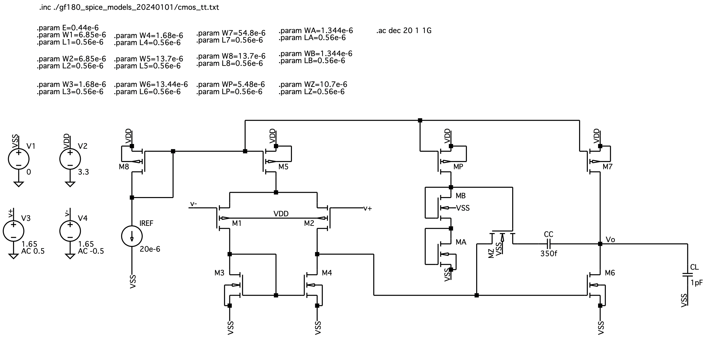
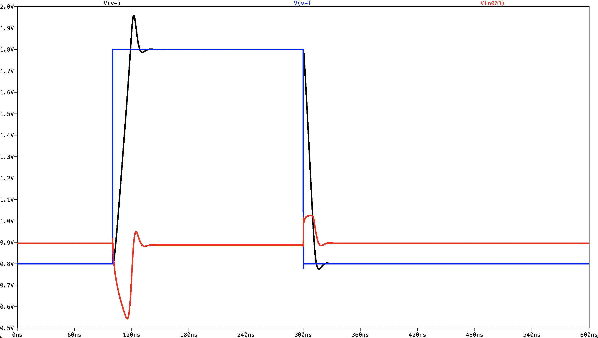
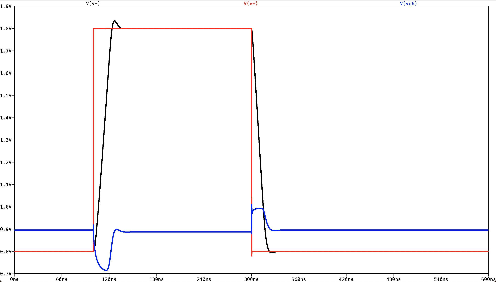
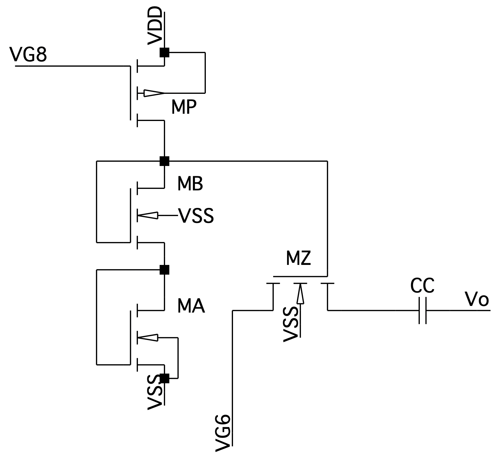

Two-stage Miller-compensated op-amp
A PMOS-input two-stage op-amp, compensated twice over: once for small-signal stability, then again when a large step showed the second stage cutting off. The nulling resistor is built two ways, as an ideal resistor and as a transistor in triode, and the transistor version holds its phase margin far better across process and temperature.

| Parameter | Ideal resistor (R = 1/gm6) | Triode transistor MZ |
|---|---|---|
| Open-loop DC gain (hand: 81.8 dB) | 81.8 dB | 81.8 dB |
| −3 dB bandwidth | 3.12 kHz | 3.12 kHz |
| Unity-gain frequency, ft | 35.7 MHz | 35.0 MHz |
| Phase margin | 66.2° | 65.3° |
| Gain margin | 26.8 dB | 32.9 dB |
| Slew rate (rise / fall) | 47.5 / 54.8 V/µs | 46.5 / 54.4 V/µs |
| Large-step overshoot | 3.44% | 5.05% |
| Rise / fall time, 10–90% | 16.8 / 14.6 ns | 17.2 / 14.7 ns |
| Power | 0.400 mW | 0.427 mW |
Design notes
Sizing
Every device runs at VOV = 0.2 V with L = 0.56 µm. I measured ID/W for each device type at that overdrive in LTspice, then set widths from branch currents: 10 µA per input device and 82 µA in the second stage. M6 is sized from the systematic-offset condition (W/L)6/(W/L)4 = 2(W/L)7/(W/L)5. By hand, each stage gives about 102 and 120 V/V, for 81.8 dB overall, which matches simulation.
Why it needs compensation
Without compensation both poles sit below the 201 MHz unity-gain frequency, each contributing nearly 90°, and the phase margin is −7.8°: unstable as a unity-gain buffer. Miller capacitance CC splits the poles, but adds a right-half-plane zero at gm6/CC. A resistor of 1/gm6 = 1479 Ω in series with CC pushes that zero to infinity, leaving PM = 90° − tan−1(ft/fp2). Targeting 60° gives CC = 233.8 fF, and simulation returns 57.2°.
The large step that changed CC
That design overshot a large step by 15.8%. During slewing, the first stage pulled M6's gate below threshold and switched it off. The output stage can only keep up if I7 ≥ I(1 + C2/CC). With I7 fixed at 81.9 µA, that means CC ≥ 330 fF, which is the same as asking for a phase margin of at least 67.7°. I raised CC to 350 fF. Overshoot fell to 3.4% and M6's gate stayed above 0.715 V, at the cost of ft dropping from 49.7 to 35.7 MHz.
A resistor that tracks gm6
A fixed resistor only cancels the zero at one value of gm6, and gm6 drifts with process and temperature. Instead I biased an NMOS MZ in triode at the same overdrive as M6, so RZgm6 depends only on the width ratio. A diode stack at M6's current density sets MZ's gate, so VOV,Z follows VOV6. I sized for RZgm6 = 1.2, a little above 1, which moves the zero into the left half-plane to add phase. The first sizing gave 1.144, and resizing WZ from 11.2 to 10.7 µm landed exactly on 1.20.



Across process and temperature
I swept TT, SS, FF, SF and FS at −40, 27, 85 and 125 °C, plus ±20% on the fixed resistor. The triode transistor keeps the phase margin within 0.7° at any one corner against up to 6.9° for the resistor, and its worst case is 63.4° against 60.8°. The skewed corners cause most of what variation remains, because the PMOS input pair and the NMOS output device move in opposite directions.
| Measurement | Resistor, ±20% | Triode transistor MZ |
|---|---|---|
| Phase margin spread within a corner | 6.5–6.9° | 0.4–0.7° |
| Phase margin, total spread | 10.9° | 3.9° |
| Worst-case phase margin | 60.8° | 63.4° |
| Gain margin range | 20.1 to 40.9 dB | 30.3 to 36.5 dB |
| Unity-gain frequency range | 28.2 to 44.0 MHz | 27.7 to 43.2 MHz |
| Device | Role | W (µm) | ID (µA) | |VGS| (V) | |VDS| (V) | |Vth| (V) | Vdsat (V) | gm (µS) | gds (µS) |
|---|---|---|---|---|---|---|---|---|---|
| M1, M2 | PMOS input pair | 6.85 | 9.73 | 1.17 | 1.93 | 0.983 | 0.202 | 86.5 | 0.274 |
| M3, M4 | NMOS mirror load | 1.68 | 9.73 | 0.889 | 0.889 | 0.699 | 0.209 | 79.8 | 0.572 |
| M5 | PMOS tail source | 13.7 | 19.5 | 0.98 | 0.483 | 0.79 | 0.193 | 170 | 1.50 |
| M6 | NMOS second stage | 13.44 | 81.9 | 0.889 | 1.62 | 0.708 | 0.203 | 676 | 3.23 |
| M7 | PMOS second-stage load | 54.8 | 81.9 | 0.98 | 1.68 | 0.79 | 0.194 | 712 | 2.38 |
| M8 | Diode-connected reference | 13.7 | 20.0 | 0.98 | 0.98 | 0.79 | 0.193 | 174 | 0.847 |
Still to come: CMRR, small-step response, and a side-by-side comparison with the folded cascode.